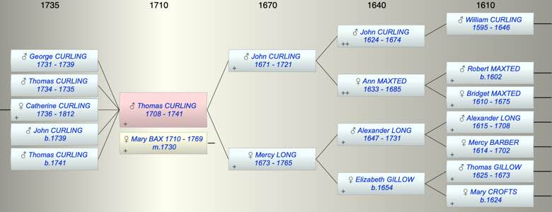

| [Index] |
| Thomas CURLING (1708 - 1741) |
|  |
| b. 1708 at St Laurence |
| m. 08 Dec 1730 Mary BAX (1710 - 1769) at St Clement, Sandwich |
| d. 1741 aged 33 |
| Parents: |
| John CURLING (1671 - 1721) |
| Mercy LONG (1673 - 1765) |
| Children (5): |
| George CURLING (1731 - 1739) |
| Thomas CURLING (1734 - 1735) |
| Catherine CURLING (1736 - 1812) |
| John CURLING (1739 - ) |
| Thomas CURLING (1741 - ) |
| Grandchildren (3): |
| Mary HOOPER (1763 - 1800), Anthony HOOPER (1764 - ), Thomas Abbott HOOPER (1765 - 1829) |
| Events in Thomas CURLING (1708 - 1741)'s life | |||||
| Date | Age | Event | Place | Notes | Src |
| 1708 | Thomas CURLING was born | St Laurence | Note 1 | ||
| 1721 | 13 | Death of father John CURLING (aged 50) | St Laurence | ||
| 08 Dec 1730 | 22 | Married Mary BAX (aged 20) | St Clement, Sandwich | Note 2 | |
| 1731 | 23 | Birth of son George CURLING | St Laurence | Note 3 | |
| 1734 | 26 | Birth of son Thomas CURLING | St Laurence | Note 4 | |
| 1735 | 27 | Death of son Thomas CURLING (aged 1) | St Laurence | Note 5 | |
| 1736 | 28 | Birth of daughter Catherine CURLING | St Laurence | Note 6 | |
| 1739 | 31 | Birth of son John CURLING | St Laurence | Note 7 | |
| 1739 | 31 | Death of son George CURLING (aged 8) | St Laurence | Note 8 | |
| 1741 | 33 | Birth of son Thomas CURLING | St Laurence | Note 9 | |
| 1741 | 33 | Thomas CURLING died | |||
| Death of son Thomas CURLING | Note 10 | ||||
| Personal Notes: |
| Cotton concludes that Thomas did not marry whereas Thomas' mother makes clear that he did marry and when she wrote her will in 1765 he had died and left three children. We suggest he is the Thomas Curling who married Mary Bax at Sandwich in 1730. They did have three surviving children. The record shows they were both of St Laurence and married by licence. Mary's mother was a Curling. |
| Created on a Mac™ using iFamily for Mac™ on 8 Oct 2023 |